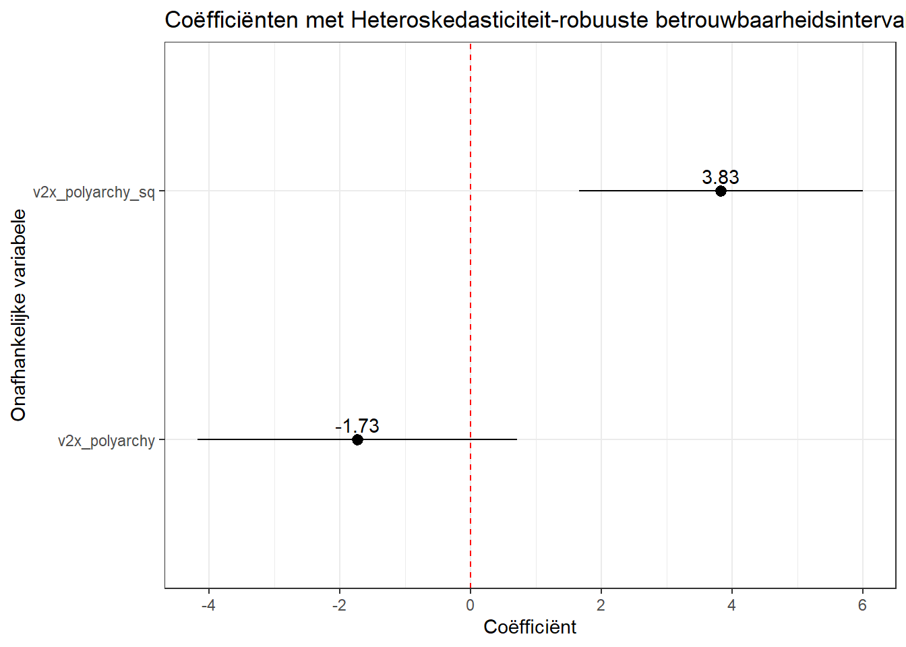
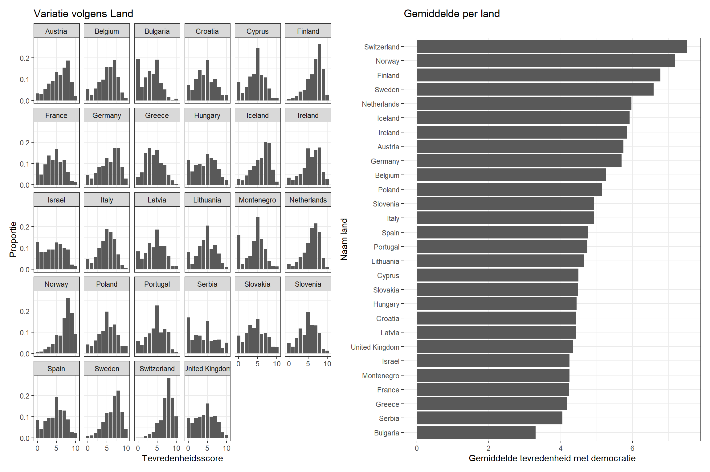
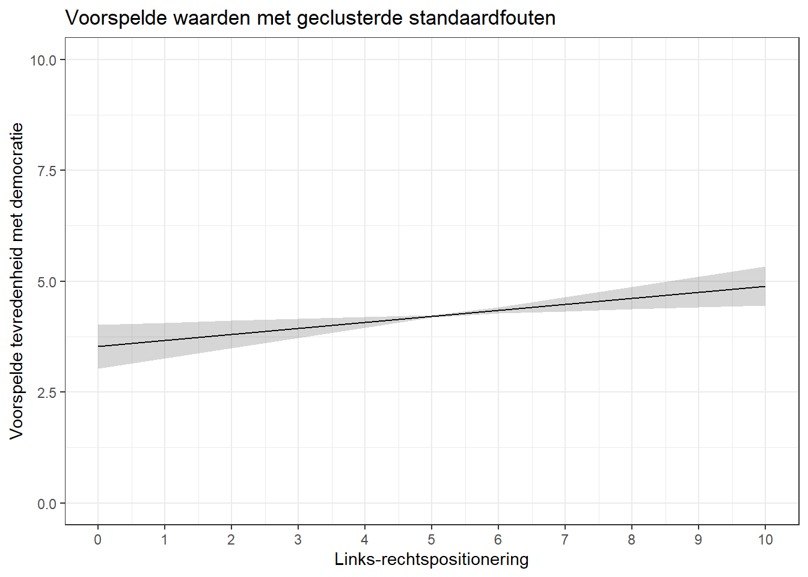

Je hoeft niet te weten hoe je deze analyses moet uitvoeren voor de opdrachten in Statistiek II. Deze gids is bedoeld voor studenten die hun eindpaper schrijven voor Academische Vaardigheden: Kwantitatieve Data-Analyse of een BAP-scriptieproject en graag assumptieschendingen willen vermijden.
Regressiemodellen zijn gebaseerd op een aantal assumpties of aannames. Een belangrijk onderdeel van de analyse is nagaan of aan die assumpties voldaan is. Zoniet, dan moeten assumptieschendingen op een passende manier behandeld worden. Statistiek II richt zich meer op het eerste deel van het proces: wanneer is niet voldaan aan een assumptie? In deze Appendix geven we een kort overzicht van enkele mogelijke oplossingen voor assumptieschendingen waar je mee geconfronteerd kan worden.
D.1 Assumpties over de fouten (residuals) in OLS modellen
De \(e_{i}\) term in bovenstaande vergelijking staat voor de ‘error’, fout, of residual in een linear regressiemodel. Er zijn drie assumpties over deze fouten:1
De variantie van de residuals is constant over het hele bereik van de voorspellingen van het model (homoskedasticiteit)
De residuals zijn onafhankelijk van elkaar
De residuals volgen een normaalverdeling met een gemiddelde van 0
Schendingen van deze assumpties hebben belangrijke gevolgen voor statistische significantietests. Ernstige schendingen leiden tot onbetrouwbare schattingen van de standaardfout van een coëfficiënt en, als gevolg daarvan, tot onjuiste oordelen over statistische significantie.
D.2 Omgaan met Heteroskedasticiteit
D.2.1 Wat was het probleem ook al weer?
Onderstaand voorbeeld komt uit Hoofdstuk 7 en voorspelt de mate van politieke stabiliteit in een land op basis van democratieniveaus. In het voorbeeld hebben we ook een kwadratische term voor democratiescore toegevoegd om non-lineaire verbanden te kunnen vatten. Hier is het model en de resultaten:
Aan de assumptie is voldaan als de fouten een even grote spreiding kennen op lage, gemiddelde, en hoge waarden van de voorspelde waarden. Ze moeten zich ongeveer in een evenwijdige band bevinden. Hier zien we dat de assumptie geschonden is aan de trechtervorm: we vinden een grote spreiding van residuals bij lage voorspele waarden (de schatting is hier onnauwkeurig) en weinig spreiding bij hoge voorspelde waarden (de schatting is hier veel nauwkeuriger).
De vcov functie die we hieronder gebruiken is afkomstig uit hetsandwichpackage en helpt bij de berekening van robuuste standaardfouten. Je zult dit package misschien eerst moeten installeren.
Heteroskedasticiteit heeft verschillende mogelijke oorzaken. Zo kan het onstaan door het ontbrekenen van belangrijke predictoren in het model. Het is een goed idee om na te denken over waarom de residuals zo verschillen en welke bijkomende onafhankelijke variabele deze spreiding kan verklaren. We kunnen dit echter niet altijd weten en als we al een idee hebben, kan het zijn dat de relevante onafhankelijke variabele niet in de dataset voorkomt.
Een andere mogelijke oorzaak is dat we een lineaire relatie schatten waar eigenlijk een niet-lineaire relatie geschat moet worden. Dit is hier echter niet het geval.
Wat kunnen we dan nog doen?
Een gangbare manier is om de berekenmethode voor de standaardfouten van de coëfficiënten in het model aan te passen. De standaardfouten die normaal door R worden berekend gaan uit van homoskedasticiteit, maar we kunnen ‘heteroskedasticiteit-robuuste’ standaardfouten berekenen als alternatief. Belangrijk is om te onthouden dat deze oplossing een mathematisch ‘truukje’ is, ons model past nog altijd slecht en het is belangrijk theoretisch hierover na te denken. De eerste stap blijft altijd om na te denken over mogelijk ontbrekende predictoren.
De eenvoudigste manier om robuuste standaardfouten te verkrijgen is via het modelsummary package. We bekijken eerst nog even de ‘normale’ regressie-output voor het model:
De vcov = optie vraagt om robuuste standaardfouten te berekenen en te gebruiken in de tabel. “HC3” staat voor ‘heteroskedasticiteit-robuuste standardfouten’. Er zijn verschillende heteroskedasticiteit-robuuste standaardfouten (bv., “HC0”, “HC1”, etc.). We raden “HC3” aan als standaard, ook omdat deze goed werkt bij kleine steekproefgroottes.
Laten we de ‘normale’ en ‘robuuste’ standaardfouten vergelijken:
De eerste kolom toont de resultaten voor de ‘normale’ standaardfouten, de tweede kolom deze voor de ‘robuuste’ fouten. We kunnen het volgende opmerken:
De coëfficiënten veranderen niet, enkel de standaardfouten.
De robuuste standaardfouten zijn typisch groter. Heteroskedasticiteit zorgt immers doorgaans voor een neerwaarste bias: standaarfouten worden te klein geschat als we de normale methode zouden gebruiken.
De interpretatie van de resultaten verandert hier niet. De significantietoetsen voor de predictoren komen uit op dezelfde conclusies. Di is echter lang niet altijd het geval!
Het voorbeeld hierboven maakt gebruik van modelsummary() en geeft de resultaten weer in een tabel. Ook voor voorspelde waarden en coëfficiëntenplots kunnen we robuuste standaardfouten gebruiken zodanig dat betrouwbaarheidsintervallen aangepast worden.
We blijven de bovenstaande vcov optie gebruiken, maar binnen de predictions() functie uit het marginaleffects package (bv., predictions(model, ..., vcov = "HC3")) voor voorspelde waarden.
Voor coëfficiëntenplots kunnen we de syntax echter niet netjes combineren met tidy() zoals we deden in Hoofdstuk 8. In de plaats daarvan gebruiken we de avg_slopes() functie uit het marginaleffects package. avg_slopes() schat de marginale effecten van elke predictor in het model. Bij OLS is dit gelijk aan de coëfficiënten.
We voegen de vcov = optie toe aan de avg_slopes() functie en plotten de resultaten:
# robuuste SEs en plotavg_slopes(violence_sqmodel, vcov ="HC3") |>ggplot(aes(x = estimate, y = term)) +geom_pointrange(aes(xmin = conf.low, xmax = conf.high)) +geom_text(aes(label =round(estimate, 2)), vjust =-0.5) +geom_vline(xintercept =0, linetype ='dashed', color ='red') +theme_bw() +labs(x ="Coëfficiënt", y ="Onafhankelijke variabele", title ="Coëfficiënten met Heteroskedasticiteit-robuuste betrouwbaarheidsintervallen")
1
Opvragen van marginale effecten van de predictoren samen met de robuuste standaardfouten.

D.3 Omgaan met afhankelijke fouten
Een tweede belangrijke assumptie in OLS (en logistische) modellen is deze van onafhankelijkheid. We gaan ervan uit dat de fouten in de populatie en in ons model niet gecorreleerd zijn met elkaar. Deze assumptie kan geschonden zijn wanneer data ‘geclusterd’ is.
D.3.1 Probleem 1: geclusterde data
D.3.1.1 Voorbeeld van het probleem
Stel dat we meten in welke mate burgers tevreden zijn met democratie in verschillende Europese landen (bv. met links-rechtspositie als predictor). We kunnen de European Social Survey (ESS) gebruike, waarbij respondenten uit verschillende landen werden ondervraagd. Wanneer de analyse meerdere landen beschouwt, zijn respondenten geclustert in hun land.
We bekijken de resultaten van een dergelijk model. De afhankelijke variabele meet tevredenheid met democratie op een schaal van 0 (“zeer ontevreden”) tot 10 (“zeer tevreden”). De onafhankelijke variabele meet links-rechtspositie met een schaal van 0 (“links”) tot 10 (“rechts”).
# Model demsatis_model <-lm(stfdem ~ lrscale, data = ess_demsatis)# Coefficientstidy(demsatis_model, conf.int =TRUE)
De coëfficiënt voor links-rechtspositie (lrscale) is positief: mensen die zich meer aan de rechterkant van het politieke spectrum plaatsen zijn meer tevreden met democratie. De coëfficiënt is ook statistisch significant met wel een heel kleine p-waarde (7.97e-117). Laten we echter kijken hoe clustering hier bij komt kijken.
Show the code
# Extra package for plottinglibrary(patchwork)# Distribution plotdistribution_plot <- ess_demsatis |>group_by(country_name, stfdem) |>tally() |>ungroup() |>group_by(country_name) |>mutate(prop = n /sum(n)) |>ggplot(aes(x = stfdem, y = prop)) +geom_col() +facet_wrap(~ country_name) +theme_bw() +labs(title ="Variatie volgens Land", y ="Proportie", x ="Tevredenheidsscore") +scale_x_continuous(breaks =c(0,5,10))# Plot of meansmean_plot <- ess_demsatis |>group_by(country_name) |>summarize(dem_satis =mean(stfdem, na.rm = T)) |>ggplot(aes(x = dem_satis, y =reorder(country_name, dem_satis))) +geom_col() +theme_bw() +labs(title ="Gemiddelde per land", y ="Naam land", x ="Gemiddelde tevredenheid met democratie")# Combine together using patchworkdistribution_plot + mean_plot
1
De patchwork library wordt hier gebruikt om meerdere grafieken te combineren met elkaar.
2
Deze regels berekenen het aantal antwoorden per antwoordcategorie per land.
3
We berekenen hier de proportie van observaties met een specifieke respons per land.
4
De reorder() optie herordent de y-as zodat die loopt van hogere tot lagere gemiddelde scores.

Het linkse plot in de figuur hierboven toont de proportie observaties per antwoordcategorie (x-as) per land (aparte ‘facets’). De plot toont variatie tussen individuen binnen een land: sommige zijn tevreden, andere niet. De verdeling van observaties is echter niet dezelfde per land. Sommige landen zien meer tevreden respondenten (bv., Finland, Norwegen, en Zwitserland) terwijl in andere landen mensen zich meer onderaan de schaal bevinden (bv., Bulgarije, Servië, en Griekenland).
Er is dus niet alleen variatie tussen individuen, maar ook variatie tussen landen. Dit zien we ook op het rechtse plot, dat de gemiddelde tevedenheidsscore per land weergeeft.2
Democratische tevredenheid is hoger in sommige landen dan andere. Daar kunnen verschillende redenen voor bestaan: andere politieke instituties, economische welvaart, corruptieniveaus enz. Mensen binnen een land leven in een context waarin die factoren gelijk zijn, maar mensen buiten een bepaald land leven in andere omstandigheden. We kunne dan ook verwachten dat errors van mensen binnen een bepaald land gecorreleerd zijn met elkaar in een studie waarbij meerdere landen zijn opgenomen.De standaardfouten in het model zijn dan wellicht ook niet correct.3
We kunnen 2 methoden gebruiken om dit te corrigeren:4
We kunnen gebruik maken van “geclusterde standaardfouten” en “fixed effects”. Net zoals bij heteroskedasticiteit herberekenen we de standaardfouten (Let op: de berekening is wel anders). Deze corrigeren voor het feit dat de errors van observaties binnen een cluster (hier: land) gecorreleerd zijn. Fixed effects toevoegen houdt in dat we een dummy-variabele toevoegen per cluster (hier:land) om te controleren op variaties in de afhankelijke variabele afkomstig uit kenmerken van de cluster.
Sommige onderzoekers maken ook gebruik van “multilevel modellen”. Met deze modellen kunnen predictoren op het niveau van individuele respondenten alsook predictoren op het cluster-niveau worden toegevoegd (bv. BBP) Deze methode is te gevorderd voor dit handboek en wordt verder niet besproken.
D.3.2 Mogelijke oplossing: Clustered standard errors & fixed effects
We schatten ons model met geclusterde standaardfouten met de code uitgelegd hieronder. Om “fixed effects” toe te voegen transformeren we gewoon de clustervariabele in een factor-variabele. Wanneer we deze factor toevoegen aan het model neemt R dummies op voor elke cluster, behoudens de referentiecategorie. 5
# factor makeness_demsatis <- ess_demsatis |>mutate(country_name_F =factor(country_name))# Controleren of alles juist is gegaan: Austria is hier de referentiecategorielevels(ess_demsatis$country_name_F)
Het model bevat nu een coëfficiënt voor links-rechtspositie (lrscale) en een reeks dummy-variabelen voor elk land (country_name_FBelgium, country_name_FBulgaria, etc.). Schrik niet van deze output, dit is effectief de bedoeling!
De coëfficient voor lrscale toont de associatie tussen links-rechtspositie en tevredenheid met democratie, gecontroleerd voor het land waar de respondent zich bevindt. De dummy-coëfficiënten tonen het verschil tussen elk land en de referentiecategorie (Oostenrijk), gecontroleerd voor lrscale. We vinden bijvoorbeeld dat als we Bulgaarse en Oostenrijkse burgers met dezelfde ideologiescore zouden vergelijken, dan zouden we verwachten dat tevredenheid van Bulgaarse burgers gemiddeld genomen 2.42 eenheden lager is dan die van Oostenrijkse burgers.
De resultaten hieboven maken nog gebruik van de ‘normale’ standaardfouten. We kunnen de geclusterde standaardfouten toevoegen via modelsummary() met de vcov = optie, zoals hieronder (coef_rename hebben we hier even weggelaten).
Met deze optie vragen we om geclusterde standaardfouten te berekenen voor ons model. De clustervariabele moet aangeduid worden in de syntax.
We kunnen de vcov optie ook gebruiken voor voorspellingen en marginal effects binnen de avg_slopes en predictions functies:
predictions(demsatis_model2, newdata =datagrid(lrscale =c(0:10)), vcov =~country_name_F) |>ggplot(aes(x = lrscale, y = estimate)) +geom_line() +geom_ribbon(aes(ymin = conf.low, ymax = conf.high), alpha =0.2) +theme_bw() +labs(title ="Voorspelde waarden met geclusterde standaardfouten", x ="Links-rechtspositionering", y ="Voorspelde tevredenheid met democratie") +scale_x_continuous(breaks =c(0:10)) +scale_y_continuous(limits =c(0,10))

Presentatie
Met de modelsummary functie hierboven creëerden we een regressietabel met de coëfficiënten voor alle `country_name_F’- categorieën. Als er echter heel veel dummies zijn (en die dummies zijn ook minder relevant voor de interpetatie), dan worden ze vaak weggelaten in de output. Wel moet je in de notitie aan de lezer verduidelijken dat ‘fixed effects’ en geclusterde standaardfouten werden gebruikt.
We gebruiken coef_map om bepaalde coëfficiënten weg te kunnen laten in de output (zie Paragraaf 15.2).
modelsummary( demsatis_model2, stars = T, vcov =~country_name_F, coef_map =c("(Intercept)"="Constante", "lrscale"="Links-Rechtspositie"),gof_map =c("nobs", "r.squared", "adj.r.squared"),title ="Democratische tevredenheid en links-rechtspositie", notes ="Lineaire regressiecoëfficiënten met geclusterde standaardfouten tussen haakjes. Model geschat met country fixed effects.")
Democratische tevredenheid en links-rechtspositie
(1)
+ p < 0.1, * p < 0.05, ** p < 0.01, *** p < 0.001
Lineaire regressiecoëfficiënten met geclusterde standaardfouten tussen haakjes. Model geschat met country fixed effects.
Constante
5.146***
(0.230)
Links-Rechtspositie
0.136**
(0.048)
Num.Obs.
39522
R2
0.160
R2 Adj.
0.160
D.3.3 Probleem 2: Data over de tijd heen en seriële autocorrelatie
De assumptie van onafhankelijke fouten kan ook geschonden worden als we dezelfde eenheid (bv. een persoon, land, bedrijf) observeren over meerder punten in de tijd. Dit wordt ‘time-series’ data genoemd.
Stel bijvoorbeeld dat we geïnteresseerd zijn in de relatie tussen welvaart en democratie in een land. We maken hier gebruik van V-Dem data en kijken naar de relatie tussen welvaart van een land (e_gdp) en democratiescore (v2x_polyarchy). We richten ons eerst op Nederland. Hieronder tonen we hoe de data eruit ziet.
#Filteren op Nederlandnetherlands <- serial_data |>filter(country_name =="Netherlands")#eerste 15 rijen in de dataset bekijkenhead(netherlands, n =15L)
De dataset meet de variabelen vanaf 1789. Maar vinden we een relatie tussen de twee variabelen? Gaat hogere welvaart gepaard met meer democratie? We kunnen een lineaire regressie schatten om dit te proberen nagaan. We beperken ons hier tot een bivariate analyse. In de praktijk zou je ook op zoek willen gaan naar controlevariabelen.6
# Het modelneth_model1 <-lm(v2x_polyarchy ~ e_gdp, data = netherlands)# Coëfficiënt bekijkentidy(neth_model1, conf.int =TRUE)
De coëfficiënt voor e_gdp is positief. Het getal is erg klein, maar dit betekent niet noodzakelijk een klein effect gezien de predictor hier een sterke spreiding heeft. De coëfficiënt is ook statistisch significant.
Echter moeten we opletten: onze observaties zijn allemaal gelinkt aan hetzelfde land en zijn dus niet onafhankelijk. Dit betekent vaak dat we de standaardfouten onderschatten en we kunnen zo onterecht significate effecten vinden.
Dit probleem is gekend als seriële autocorrelatie: de errors van het model zijn gecorreleerd met elkaar over de tijd heen. Een error op tijdstip t is systematisch gerelateerd aan de error van het jaar voordien, t-1. Dit is logisch gezien de welvaart en het democratisch gehalte van een land vrij stabiel zijn en afhangen van onderliggende condities zoals economische instituties, natuurlijke rijkdommen enz. Deze factoren fluctueren niet zo sterk over de tijd heen waardoor opeenvolgende errors vaak lijken op elkaar.
We kunnen formeel nagaan of er seriële autocorrelatie aanwezig is met behulp van de Durbin-Watson statistiek zoals besproken in Hoofdstuk 7.
car::durbinWatsonTest(neth_model1)
1
Het car:: prefix staat ons hier toe om het carpackage te gebruiken zonder het te moeten laden. Dit heeft voordelen gezien carook funties heeft die conflicteren met andere functies die we gebruiken, in het bijzonder de recode functie uit het dplyr/tidyverse package.
lag Autocorrelation D-W Statistic p-value
1 0.9667039 0.05304265 0
Alternative hypothesis: rho != 0
De Autocorrelation kolom geeft de correlatie weer tussen errors van het ene jaar op het andere. De correlatie is 0.97. Dit is hoog, gezien het maximum +1 is. De D-W Statistic test formeel of de autocorrelatie te hoog is. Dit is het geval als D-W hoger is dan 3 of kleiner dan 1. Hier is het duidelijk lager dan 1 (0.053). De p-waarde is extreem klein en dus verwerpen we de nulhypothese dat er geen autocorrelatie is. De standaardfouten zijn niet correct.
We kunnen dit probleem oplossen door een ‘vertraagde afhankelijke variabele’ (‘lagged dependent variable’) toe te voegen als predictor in ons model. Deze vertraagde afhankelijke variabele bevat voor elke observatie de score voor de afhankelijke variabele in het onmiddellijk voorgaande tijdspunt. Door deze variabele op te nemen wordt het probleem van stabiliteit/inertie in de afhankelijke variabele (en gecorreleerde errors) verholpen.7
D.3.3.1 Lagged Dependent Variables maken
We kunnen de lag() functie gebruiken om onze afhankelijke variabele te ‘vertragen’ voor een nieuw aangemaakte variabele.8
We gebruiken de functie lag op de relevante afhankelijke variabele (hier, v2x_polyarchy). Het nummer aan het einde van de functie geeft weer hoeveel eenheden vertraging we willen. Met het cijfer 1 zeggen we 1 tijdseenheid (hier: 1 jaar). Dit is het meest gebruikelijk. Indien we de v2x_polyarchy score van 2 jaar terug zouden willen, dan schrijven we ‘2’ enzovoort.
Elke rij in de dataset bevat waarden per uniek jaar (1789, 1790, …). v2x_polyarchy geeft de democratiescore van het land in het betreffende jaar. De nieuwe kolom (dem_lag) geeft de score in het voorgaande jaar. De waarde voor dem_lag in rij 9 (year = 1797) is 0.133; dis was de waarde voor democratie in 1796 (rij 8).We zien NA in de eerste rij gezien we geen voorgaande data hebben.
Waarschuwing!
Het spreekt voor zich dat de dataset eerst netjes geordend moet zijn op jaar vooraleer we functies zoals car::durbinWatsonTesten lag kunnen gebruiken. Hoe je een dataset kan ordenen (indien nodig) wordt besproken in Hoofdstuk 7.
We voegen nu de lagged dependent variabele toe als predictor aan ons origineel model
# Het nieuwe modelneth_model2 <-lm(v2x_polyarchy ~ e_gdp + dem_lag, data = netherlands)# Coëfficiënten opvragentidy(neth_model2, conf.int =TRUE)
De coëfficiënt voor dem_lag is 0.978. Dit is hoog, onze afhankelijke variabele heeft een bereik van 0 tot 1. De coëfficiënt toont dus dat er sterke stabiliteit is tussen democratiescores in opeenvolgende jaren. 9 We vinden dan ook dat de R2 statistieken dichtbij hun maxima van 1 zitten: toevoeging van de lagged dependent variable verklaart bijna alle variatie in democratiescore.
De coëfficiënt voor e_gdp toont de associate tussen BBP en democratiescores gecontroleerd voor democratiescore in het voorgaande jaar. Dit vertelt ons eigenlijk of BBP gerelataard is aan verandering in democratiescore van jaar tot jaar. De coëfficiënt is positief, maar niet langer significant.
Hebben we daarmee het probleem van autocorrelatie opgelost? We gaan het na:
car::durbinWatsonTest(neth_model2)
lag Autocorrelation D-W Statistic p-value
1 0.2865016 1.425975 0.006
Alternative hypothesis: rho != 0
Autocorrelatie bedraagt nu slechts 0.29, wat veel lager is dan de 0.97 in het voorgaande model. De D-W statistiek bevindt zich nu tussen 1 en 3. Er is nog autocorrelatie (zie de ook de p-waarde), maar we hebben al veel in rekening gebracht.
Voorgaand voorbeeld was gericht op 1 land, namelijk Nederland. In het geval we meerdere landen hebben kunnen we ook de lag functie gebruiken, maar er zal wel een probleem optreden waar we ons van bewust moeten zijn. We tonen eerst wat het probleem is en bieden dan een oplossing:
We tonen hier de transitie in de dataset van Mexico naar Suriname. In rij 7 bevind zich de data voor Mexico voor het laats beschikbare jaar 2019. Dan springt de dataset naar het eerste jaar voor Suriname, namelijk 1960. Als we kijken naar de dem_lag variabele zien we dat Suriname in 1960 de democratiescore van Mexico in 2019 heeft meegekregen. Dat mag natuurlijk niet. Zonder correctie doet R dit voor alle punten in de dataset waar we van 1 land naar een ander land gaan.
We vermijden dit door de group_by() functie te gebruiken:
De group_by() functie vraagt R om de dataset eerst te groeperen volgens de variabele tussen haakjes (hier: country_name). Daarna pas wordt de lagfunctie, via mutate(), toegepast. Wat er precies gebeurt kun je zien met deze gif van Andrew Heiss(2024):
Heiss, Andrew. 2024. ‘Visualizing {Dplyr}’s Mutate(), Summarize(), Group_by(), and Ungroup() with Animations’. 4 april 2024. https://doi.org/10.59350/d2sz4-w4e25.
ungroup()
Deze functie is nodig om mutate te vertellen dat we niet langer willen groeperen voor toekomstige toepassingen van de functie. Anders blijft mutate verdere bewerkingen per groep uitvoeren.
We zien nu een NA waarde in rij 8, het eerste beschikbare jaar voor Suriname. Dit is wat we willen.
We zouden nu de regressie opnieuw kunnen uitvoeren. Onze dataset heeft nu echter niet alleen een time series element, maar bevat ook geclusterde data want meerdere landen zijn opgenomen. We zullen de lagged dependent variable-techniek dus moeten combineren met bovenstaande technieken voor clustering (fixed effects en geclusterde standaardfouten).
D.4 Omgaan met niet-normaal verdeelde residuals
D.4.1 Wat was het probleem ook al weer?
De laatste assumptie die we hier bekijken stelt dat de errors/residuals/fouten in een OLS model normaal verdeeld zijn. Of aan deze assumptie voldaan is kunnen we nagaan met plots gemaakt via resid_panel(): een histogram van de residuals en een Q-Q plot van de residuals.
# Model schattennorm_model <-lm(v2x_polyarchy ~ gini_disp + pr_fct + region1, data = normal_residual_data)# Coëfficiënten opvragentidy(norm_model, conf.int =TRUE)
Beide grafieken leiden tot dezelfde vaststelling: de assumptie is geschonden (zie Hoofdstuk 7). Met een relatief grote steekproef is een schending van deze assumptie doorgaans geen probleem. In kleine steekproeven kan dit wel problematisch zijn. Hier zien we met de glance() functie uit het broom package dat we met een kleine steekproef te maken hebben:
glance(norm_model)$nobs
[1] 77
We hebben 77 observaties in het model. Is dit klein of groot genoeg? Jammergenoeg bestaat hier geen eenduidig antwoord voor. Een vuistregel is dat we met een kleine steekproef te maken hebben bij minder dan 15 observaties per onafhankelijke variabele. Hier hebben we 5 predictors. We vinden dan dat we met 77 observaties net 2 meer hebben dan de vuistregel voorschrijft (5 * 15 = 75). Dit is echter dicht bij de grens, dus misschien is het toch veiliger om rekening te houden met een assumptieschending.
D.4.2 Mogelijke oplossing: bootstrapping
Ook voor een schending van deze assumptie (met een kleine steekproef) moeten we de standaardfouten herberekenen. We gebruiken in dit geval weer een andere herberekening dan hierboven, namelijk ‘gebootstrapte’ standaardfouten. Met bootstrapping worden standaardfouten herschat met de volgende procedure:
We nemen een steekproef van de oorspronkelijke steekproef met dezelfde grootte. Dit gebeurt met teruglegging van de observaties, dat wil zeggen 1 observatie kan meerdere malen opgenomen worden in de nieuwe steekproef. Dat moet natuurlijk, anders kom je gewoon telkens dezelfde steekproef uit. Op basis van de nieuwe steekproef schatten we coëfficiënt en standaardfout opnieuw en slagen de resultaten op. Dit doen we een aantal keren. Ten slotte kijken we naar alle verschillende coëfficiënten die we uitgekomen zijn en in het bijzonder naar de standaardafwijking van de verzameling coëfficiënten. Deze standaardafwijking wordt de ’gebootstrapte’standaardfout.
Ook deze standaardfout kunnen we bekomen met de vcov= optie in de modelsummary() syntax. Wat nieuw is hier is dat we een element van toeval toevoegen in de berekening: R gaat ‘random’ nieuwe steekproeven trekken. Op zich is dit goed -moeten wij het niet doen!- maar juist door dit toevalselement kan de uitkomst telkens licht anders zijn. Om resultaten reproduceerbaar te houden zetten we hier dan ook een ‘seed’: een seed is een zelfgekozen startgeval (je kan 1 gebruiken maar ook je verjaardag enz.). Met de seed houdt R bij welke steekproeven precies getrokken werden en worden telkens dezelfde resultaten bereikt. Voor je je seed vastlegt wil je wel eerst nagaan of je met hetzelfde aantal steekproeven sterk verschillende resultaten uitkomt, want in dat geval vraag je R best meer steekproeven te trekken voor betere schattingen, zie onder).
We zetten het toevallig trekken van steekproeven hier vast met een zelfgekozen getal zodat resultaten dezelfde blijven.
vcov = "boostrap"
Deze optie vraagt om de ‘gebootstrapte’ standaarfouten.
We kunnen de standaardfouten vergelijken:
# Seed: zelfde als hierboven want dan krijgen we zelfde resultatenset.seed(1)# Modellen vergelijkenmodelsummary(norm_model, stars = T, vcov =c("classical", "bootstrap"),gof_map =c("nobs", "r.squared", "adj.r.squared"))
(1)
(2)
+ p < 0.1, * p < 0.05, ** p < 0.01, *** p < 0.001
(Intercept)
0.641**
0.641**
(0.195)
(0.230)
gini_disp
-0.005
-0.005
(0.005)
(0.006)
pr_fctPR System
0.083
0.083
(0.062)
(0.082)
region1Africa
-0.094
-0.094
(0.114)
(0.100)
region1Europe
0.176**
0.176*
(0.067)
(0.079)
region1Americas
0.168*
0.168*
(0.071)
(0.080)
Num.Obs.
77
77
R2
0.305
0.305
R2 Adj.
0.256
0.256
Wat merken we op:
De coëfficiënten veranderen niet, enkel de standaardfouten. Dat zagen we ook bij heteroskedasticiteit-robuuste standaardfouten en geclusterde standaardfouten
De standaardfouten zijn verschillend. Doorgaans, maar niet altijd, zijn gebootstrapte standaardfouten groter.
Conclusies over de significantie van resultaten blijven hier dezelfde, hoewel we zien dat het significantieniveau voor de coëfficiënt van region1Europe veranderd is van p < 0.01 naar p < 0.05. De gevolgen kunnen veel groter zijn in andere analyses.
Zoals gezegd neemt R zelf nieuwe toevalssteekproeven. Standaard worden 250 steekproeven genomen. Zoals eerder gezegd zet je een ‘seed’ om resultaten gelijk te houden, maar natuurlijk is het niet echt betrouwbaar als resultaten bij elke trekking sterk veranderen. Vooraleer te beslissen om je seed vast te leggen, wil je nagaan of resultaten sterk verschillen zonder seed. Als dit het geval is, wil je R vragen meer steekproeven te trekken om betere schattingen te maken van de standaardfouten. Dit doen we in onderstaande syntax door R om 1000 steekproeven te vragen. We zetten een seed in de syntax, maar ga ervanuit dat we eerst goed gekeken hebben naar verschillende uitkomsten vooraleer een seed te zetten.
Deze optie laat toe het aantal steekproeven dat R trekt aan te passen. Hier vragen we er 1000.
Onze resultaten hier zijn gelijkaardig, maar niet identiek aan deze gevonden bij 250 steekproeven. Het heeft echter geen gevolgen voor de algemene conclusies over significantie.
Bootstrapping kan ook gebruikt worden binnen het marginaleffects package, bv. wanneer we voorspelde waarden en betrouwbaarheidsintervallen nodig hebben. De functie om bootstrapping te gebruiken (inferences()) is echter nog steeds in ontwikkeling en je moet er ook bijkomende packages voor installeren. Indien je dit nodig zou hebben, bekijk dan het “Bootstrap” hoofdstuk op de marginaleffects website.
Slechts een van deze assumpties is ook van toepassing op logistische modellen: de assumptie van onafhankelijke fouten. De oplossingen hiervoor zijn dezelfde bij logistische modellen, vandaar dat we ons in deze voorbeelden richten op OLS modellen.↩︎
Wel zien we dat er meer variatie is tussen individuen dan tussen landen. dat is wel vaker zo in dergelijke cross-nationale surveydatasets.↩︎
We moeten er ook op letten dat er geen ‘ommitted variable bias’ optreedt. Hier gebruiken we bijvoorbeeld slechts 1 predictor en belangrijke controlevariabelen worden wellicht over het hoofd gezien.↩︎
Er bestaan eigenlijk ook twee andere strategieën. Het probleem hier wordt veroorzaakt door het samenbrengen (“poolen”) van gegevens uit verschillende landen (“clusters”). Het kan echter zijn dat we ons zorgen maken over één cluster in het bijzonder, bijvoorbeeld het doel van ons artikel kan zijn om de relatie tussen ideologie en democratische tevredenheid specifiek in Duitsland of in Nederland te onderzoeken, enz. Een “oplossing” is dan om waarnemingen uit de andere landen weg te filteren en enkel een model voor 1 land te schatten. Het kan ook zijn dat we niet echt geïnteresseerd zijn in het lagere niveau van de dataset (bijv. de individuen in dit voorbeeld) en eigenlijk meer geven om het verklaren van de variatie tussen clusters (bijv. waarom landen als Zwitserland een hogere democratische tevredenheid hebben dan landen als Bulgarije). Een optie hier is om het clustergemiddelde te gebruiken als onze afhankelijke variabele in een regressiemodel en dit te voorspellen met predictoren op landniveau (bv. BBP). Zoals altijd is de eerste stap in elke data-analyse uitzoeken wat onze vraag is, omdat dit een grote invloed heeft op het type analyse dat geschikt is om te leren wat we willen leren.↩︎
Deze strategie werkt ongeacht de hoeveelheid clusters die je hebt. De berekening kan wel langer duren bij een groter aantal clsuters. Stel dat we met longitudinale, panel-data werken van 500 respondenten die elke maand van het jaar bevraagd worden. Voor een ‘fixed effects’analyse betekent dit dat je 499 dummies toevoegd. Dit is best veel. In dit geval kun je ook specifieke packages gebruiken die speciaal ontworpen ziin voor ’fixed effects’ en vlugger werken, bijvoorbeeld het fixest package met bijhorende feols functie. Deze functie gebruikt ook automatisch geclusterde standaardfouten.↩︎
Als we ons richten op controlevariabelen in het geval van 1 land dan moeten deze variëren over de tijd in Nederland (time-variant) en niet vaststaan (time-invariant).↩︎
Er zijn nog andere manieren om dergelijke time series te modelleren, maar deze zijn te gevorderd voor dit handboek.↩︎
Hier maken we een vertraagde afhankelijke variable maar hetzelfde proces kan gebruikt worden voor onafhankelijke variabelen, bijvoorbeeld als er zorgen zijn over omgekeerde causale verbanden (‘reverse causality’).↩︎
De bivariate pearson correlatie tussen de twee variabelen is 0.99. Democratiescores in Nederland blijven erg stabiel van jaar tot jaar.↩︎